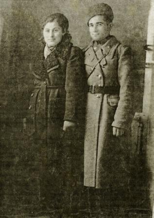
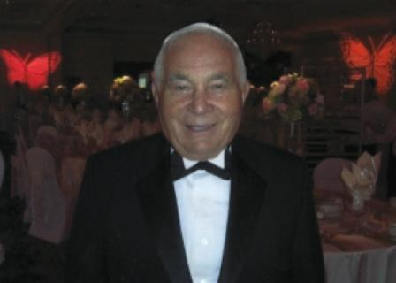
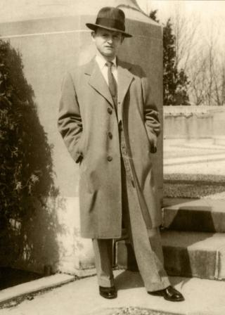
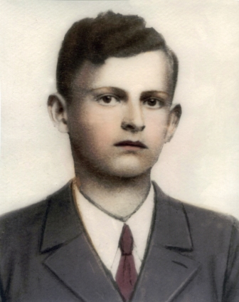
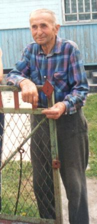

Testimonies of Survivers
Testimony of Sam boymel
Submitted to the American Society for Yad Vashem
 I was born in Turzysk Poland in 1925, and grew up there with my parents and 3 sisters. My parents names were Rachel and Zelig And my sisters were Chasia, Reisel and Malka. The Germans came in june,1941 and put us in the Ghetto. The Germans took us to work in the railroad tracks, and with the help of the Ukrainians and Poles, killed many of the Jews in the Ghetto.I used to run out of the Ghetto to get some food. One of the farmers who helped me with the food was Peter Tokarsky(known as Petro)from nearby the village Rostov. My grand mother had a bakery and she would buy fruit from the farmers nearby. Petro was one of them. That is how my Uncle Leibel Opoliner knew Petro. Leibel was a carpenter, and he build Petro's House. I would run from the Ghetto to Petr's house, and he would give me bread and potatoes to take back to the Ghetto.
In September,1942, there were only a few hundred Jews in the Ghetto. On Saturday morning the Gestapo, with the Poles and Ukrainians surrounded the Ghetto and told us they are taking us to Kovel, where they have work for us. We started walking and they separated us. My mother and 2 older sjsters were in front. I was in the middle and my younger sister was at the end. We knew that we will not make it to Kovel. Some Poles told us that mass graves were being dug for us near Ravin in the other direction.
As we were getting near the graves my mother told me to run away. She tore my yellow star off, and I started running. I looked back and saw my mother and sisters shoved into the graves, still alive. I run into the fields and hide in the corn stalks until it got dark. I saw the Ghetto burning ,I ran to the nearby village Rostov, to Petro's house. It was midnight September 27,1942. Prtro saw and Hugged me,and I started crying. He said: "my child, how did you get here?" I told him I had run away and did not know what to do. He told me that everyone was killed-no one survived. Soon after I saw my Uncle Leibel there.Petro took us both to his barn. We hid in a space under the floor-it was about 4 feet deep. The cows and pigs were above us. We hid there about two months. At night Peter would remove the cover and give us food. Petro was a lifesaver. During the day I would take care of the pigs wearing Petro's girlfriend's sister's clothes to trick anybody who would suspect anything. After two monthes Ukrainian policemen came over to the barn-Leibel saw them, wanted wanted to come out and said: I know them, I went to school with them."I said: Leibel don't go"-and he said: I have to go out or they will burn us down". He went out tried to talk to them but they said" no Jews" and they shot him on the spot. They buried him near the house. I jumped out of the back of the barn and ran away. The Ukrainians burned the barn down thinkig I was still there. Later I found out that thy warned Petro and threatened to kill him. I ran about two miles from thefarm and climbet a high tree. I hid There all night. It become more and more dangerous. The Germans told the Poles and Ukrainians that for every Jew they turn in , they will get a reward-5 pounds of sugar or a bicycle. That was a lot. Everybody was looking for Jews-even little kids.
Meanwhile Petro was called to the authorities who accused him of hiding Jews and he denied it.  I hid in the woods until the morning when a Ukrainian farmer foud me in a haystack and called his neighbors. As they were discussing what to do with me I ran away and went back to Petro's house that night. I was barefoot and cold, and asked him again for advice. He told me that I couldn't stay in his farm, it was to dangerous,but asked me to follow him. We walked several miles and he dug a deep hole and filled it with straw and leaves.I went into the hole and he covered me up.
I stayed in that hole all winter. Once a week, I would walk to the farm and Petro would give me something to eat, and I would stay with him for a few days. Than I would go back to hide in the hole. Petro would come every once in a while and give me food.
Before Christmas 1943 the Ukrainians were out in the forest cutting pine treesfor Christmas. One of them fell into the hole. I was startled and frightened,but so were they.And they ran away.I went back again to Petro for advice. At that point Petro had been taking Care of me for a year and a half. He was like a father to me.Not many Jews would do what he did. He told me that the Russian Paetisans were around 40 miles from the village and suggested I seek refuge with them.I would have to crossGerman lines to connect with the partisans. Even thoygh it was dangerouse it was Better than the way I had lived so far I followed Petro's advice. He said."I will take you" and we walked all night until we met a few partisans on horseback. They saw us and asked if we were German spies-I said"no I am a Ivrei". They told us to go 50 km' away to the headquaters of the partisans. I stayed with the Russian partisans from early1944 and participated in fighting against the Germans during which I was also wounded. I was liberated by the Russians in January or February of 1945 while I was in Sarne. I owe my live to Petro who risked his own life to save me. Petr Tokarsky passed away in 1974. His daughter Nina Tokarskaya still lives in Rostov. I visited her with my family a few years ago. I ask that Yad Vashem will recognize Mr.Petr Tokarsky as Righteous Among theNations. Thank you.
Signed: Sam Boymel, 5.22.08
Yitzhak (Itzik) Binder
The Last Days of the Ghetto in Turisk - The Annihilation - A testimony of an eyewitness
 A few days after the departure of the Soviet army on a Saturday morning a platoon of German soldiers on bicycles entered the Shtetl. They arrived on the road from the city of Vladimir Volynsk.(Ludmir) and circled the main streets for several hours, examined and filmed the Shtetl and left. On the next day many German solders marched in with most of them headed toward a town named Kovel.
This was the first time in my entire life that I had ever seen German soldiers. I can recall how they marched with their heads held high and their shirtsleeves folded to the elbow. They were joking among themselves as one of them asked how far it is to Moscow.
Another said, in three months the war will be over! To begin they stopped at a square and started to break into the stores stealing food, alcohol, and anything else they could find.
A group of Ukrainians joined in the looting the stores. Soldiers broke into Jewish homes and confiscated Soviet money threatening the people with weapons and using their weapons to attack them.
I was robbed by a soldier who stole the only three hundred Rubles I had to my name while aiming a bayonet at my chest. He ordered the family to leave the Shtetl before evening arrived.
This was my first horrible encounter with the Germans.
The Ukrainians "proclaim order" in the Shtetl
A few days later, after the front line moved further away the Ukrainians took the initiative to impose "order" in the Shtetl. German railway officials ordered Jewish citizens to narrow the railway line (the Russian railway lines are broader than the European lines). This was a laborious task lasting for three days and nights. The post office was moved into Shaya the butchers house on first floor where the store was located.They founded a new municipality, which they located at Shmeril's house. The Ukrainian militia also settled there. On the order of the German authorities the Jewish Committee, ("Juden Ratt") in charge of the "Jewish affairs" was established.
The Committee was composed mainly of several former public activists by the name of: Raphael Honikman, Yehuda Leib Ginsburg, and Zalman Segal, as chairman, and several others.embers The Craftsmen Synagogue of R. Honikman became the main office. Their role was to classify and provide the main power supply according to the request from the authorities. A Jewish Police Force with no weapons was formed to assure enforcement of the German orders. Thousands of men and women and youngsters were forced into hard labor working from early in the morning until late in the evening.
Every Jew was given a "work card". For every day they worked the card was marked, but there was no pay or food .There were several places the Committee was compelled to "supply" labor.
These places included the railway to the Kanya farm; the building camps; and the Thorf fuel mines. It was the responsibility of the Jewish Committee to prepare the lists. Every day less and less of them returned and nobody knew what happened to them.
One day a Nazi officer who was the "manager" of Turisk arrived.
His rank was the S.C Sonderfirer. He confiscated the house of Israel Wall turning it into his headquarters and residence. When his replacement arrived he confiscated Shya the butcher's premises. This German was even more evil than his predecessor.
As the days passed the food shortage was depleted and people began to starve. The food supplied was nothing more than 200 grams of bread which was later reduced to only 100 grams a day per person. German poisonous propaganda among the Ukrainian population became more aggressive. Giant signposts with anti-Semitic caricatures appeared on every crossroad and street blaming the Jews for every possible trouble or affliction. The main slogan was: "All the Jews must be destroyed".
The Ukrainian militia had a routine by which they caught Jews on the streets "arrested" them, brought them to the station with sealed windows and put on deafening music, and treated them with inhumane cruelty. Most of prisoners were seriously wounded and died shortly after.
From the first day of the occupation all the Jews were forced to put on a white band with a blue Star of David on it, shortly after it was replaced by the infamous yellow patch on the chest and back. The Jewish people were also ordered to place a big yellow sign on every Jewish house. Not fulfilling the orders was punishable by incurring a large debt.
The Jewish Prisoners of War
After the Soviet army retreated several Jewish soldiers returned to their homes in the Shtetl. The German authorities ordered all the Red Army soldiers to report to the German headquarters in Kovel. The order was aimed at all soldiers of all nationalities.
From Kovel they deported them to a concentration camp. While the Ukrainians were liberated the Jewish soldiers remained in prison. Among them was my cousin Shmulik Binder.
He was sent to a concentration camp near Lublin during the winter of 1942. It was there he saw some prisoners from Turisk. Feiwel Goldshmidt, Yankel Shcherb and others. He was lucky enough to escape and secretly returned home. His stomach was swollen from hunger, but he could not remain home because a militia man recognized him so he had to leave in the middle of the night for Kovel which was a much bigger city. There he remained in hiding. He never returned.
Kidnapping Jews
 Every day there were newer and crueler measures against the Jews whose situation became increasingly worse from day to day. Shortly after the occupation some 8 or 10 military cars arrived in the main street parking near Shaya Rabin's building. The soldiers wore helmets with the dead skull sign, grey collars and brown cuffs on their sleeves and all of them were carrying automatic rifles.
When I saw this unusual convoy, I felt something earth-shattering may happen so I rushed to hide in the attic. Through a whole in the wall I watched them. They split into several groups and spread out among the streets. Going from house to house after two hours they returned to their vehicles. They left taking ten men with them. Those men were: Slava Erlich,Dovid Shoustak,Srolik Sarny,Leibel Reichenboim, Abba Masur, Shmulik Mouslin, Shmulik Tailors son-in-law, and Bene pysk. They arrested Wolf, the son of Yankel Stelmach, but he was later released because they were searching for Moishe Urder. This list was given to them by Ukrainians.
Sadly all of them were among the first to be executed. Every new day brought terrible rumors, one more awful than other. There were rumors of the slaughters in the Jewish towns and Shtetlach around Turisk. The entire Jewish population of Macieuf was murdered. In Kovel many thousands were moved into a very small ghetto. In Turisk the Jewish committee fully aware that the people they listed to work would die and never come back. Almost every day new demands came from the Governer. We were ordered to collect all kinds of wares and valuables. The hard labor went on all day and night with no holidays including Yom Kippur, the Highest of Holy Days for the Jewish people. We were forced to work. In spite of all the horrible conditions we lived in we did not lose our faith and hoped for a miracle- to be rescued. Turisk suffered and life continued. New horrifying German orders reached the Committee. A list of workers was to leave for a region far from Turisk. This time fully aware of the destiny of the group it was very hard to prepare the list. The Jews of Turisk were deprived of everything they had. Only a very small sum of the Soviet money the Germans robbed was changed into Ukrainian Marks.
The Death of Rafael Honikman (A committee member)
A group of Jews was ordered to work in the Kania farm. Among them was also Rafael Honikman. One of the soldiers behaved like a rabid animal and when Rafael made a comment the soldier ordered him to step out of line and shot him in cold blood and ordered the others to bury him on the spot.The terrible news reached the citizens in Turisk arousing a panic and many tried to run away haphazardly. I was also among the fugitives. Very soon I reached my grandfathers home. The next morning I returned home. After a few days we were permitted to bury him in a Jewish cemetery.
The Sudden Death of the Teacher Pekarsky
The teacher Pekarsky was a very beloved and influential person in Turisk. He was concerned, caring, and helped everyone. Many friends were concerned about his health. One day while at Avrum Shafel's study table Pekarsky had a stroke and fell under the table and died. His sudden death came when he was desperately needed. He died leaving his family to be supported by his young son.
The Fur Decree
In the winter of 1941-1942 the German army forced the Jews to collect all the fur coats and hand them over to the authorities. These fur coats were sent to the eastern front during the attack on Moscow. Many of the German officers were taken prisoner. The Jews had a short time of joy when the rumors about it the Germans being imprisoned reached them. Those days the rumors were the only source of information. There was no radio or newspapers. Rumors about German defeats were also spread by a few well-wishing Ukrainians giving rise to "discussions and hope" among the suffering. The home of Yankel Urder was the meeting place to gather these rumors. Many predicaments were caused by a one armed anti-Semite, Kolia. He was always at the head of the militia and the Germans. There was also Pitka of the "Crooked Street" who was the cruelest of the collaborators with the Germans. He knew many of the Jews and the hiding places and relayed the information back to the Germans.
The Animal Decree
The German authorities issued an order to the committee: All the cows, goats, geese and chickens in the Ghetto must be turned over to the authorities the same day. In less than five hours the order was carried out. Since then not even a single drop of milk remained in our home. We were a big family with six little babies and children. I was a tailor who gave me opportunities to to secretly go to nearby villages to mend or make new clothes for the peasants and their families. As a reward I got food that I smuggled to my family so that the children did not starve.
Saying Goodbye to My Family
On Friday the19th of August, 1942 after a week of sewing for a peasant family in the village Dombrova, I walked back on a secret path home to my family to celebrate the Sabbath. It was a warm and nice summer day very close to the Jewish New Year. As I entered the "Crooked Street I suddenly became aware of something unusual happening. From afar I recognized many people running around in excitement. There were groups of people standing in circles, telling secrets and rumors. I ran home and at the entrance of my house my eldest sister was crying and fell on my chest saying Izikel, our time has come! The day of our destruction is near. All the Jews in Kovel even our closest neighbors- no one survived! All of them were shot in the forest! The committee was ordered to hand over by the next day one half a million Ukrainian Marks, 500 of the best suits, and 500 leather boots. If something on the list was missing they will execute 25 Jews. If there is less money they will destroy Turisk! Everything was to be supplied by Shabbat morning.
A woman by the name of Golda Rabin came in crying and pleading for us to pray to God. She cried, Kinderlach, the day of our destruction is here. Maybe He will listen to children's prayers and will grant our lives. The Germans are loosing the war and blaming the Jews. But if God wants He can make wonder.
Together with my elder sister we decided that I would go back to the village and perhaps the evil will pass. It happened before?! Then I will come back. So I left home hoping to find shelter for my family. Early the next morning Turisk was surrounded by the militia and nobody could enter or leave. Those who tried to leave were shot dead. Many succeeded, but were caught and shot.
Saturday morning I tried to go back home. Not far from the railway station I met a young girl who managed to run away. She told me everything and warned me not to go back if I want to live. She told me how she managed to escape by bribing one of the militia on the bridge. The situation in Turisk worsened every minute. All of them were waiting for Commander Mantel to come from Kovel.
My Wandering Begins
In the morning of Sunday the 21st of August 1942 I asked the peasent who gave me shelter to go close to Turisk to find out what the situation was there. He soon came back with very bad news. Nobody was alive. Anyone who tried to escape was shot on the spot.
Even the important Thorf Mine workers were not allowed to leave. They said: The fate of the Jews is on the scales. They managed to collect only a part of the money, but they collected all the suits and boots that were demanded. All the tailors and shoemakers joined together and prepared everything. Everybody helped hoping that maybe they will manage to prevent the disaster.
But it didn't. This was the last drop of blood the murderers managed to squeeze out of the Shtetl. I left the peasants house and went to hide in the forest nearby. Every evening I went to his house asking for food. It became very dangerous because the Ukrainians were hunting runaway Jews and getting rewards for every dead Jew. I was waiting for my death all the time.
The Shtetl Turisk in Flames.
Tuesday the 23rd of August, 1942, For more than three days the Ghetto was waiting in panic, It was a nice, warm summer day when close to noon the militia gave the orders that all the Jews had to leave their homes and gather in the giant square near the big synagogue. It was permitted to carry a small bundle of food for the day and a small sum of valuables. In less than an hour everyone was gathering at the synagogue. The Ukrainian militia surrounded them and ordered all of them, young and old, women and children, to march on the road to Kovel. They told the villagers that they were going to live in the Ghetto in Kovel. Some assumed that they are moving to the village of Horodelez, but nobody quessed the truth. When they saw it they understood.
About two kilometers from the Shtetl they saw large pits where the clay for the manufacturing of bricks was excavated. The militia forced them to strip naked and lines after lines of naked and humiliated people were brought to the verge of the pit shoot down and fell into the pit one on top of the other. The mass murder was the job" of the militia with only a few German officers supervising. The slaughter continued until evening. Some Ukrainians told me The next day that while the murder went on one of the men attacked a militia man and grabbed his automatic gun and began Militia men and some others. He shouted and called the Jews to escape. Hundreds started to run knowing it as their last chance.
They ran across the fields toward the forest. The militia followed and shot their automatic guns in every direction. Those who managed to escape were shooting and their bodies were spread all over the fields. Some young mothers killed themselves with their children. The Ukrainians were ordered to collect the bodies taking the clothes of the victims as a reward. Another Ukrainian told me that not all the Jews reported to the square and tens of young Jews were hiding in the houses. It was a quiet evening. The Ghetto houses were dark.
In the evening the militia and hordes of drunken Ukrainians entered the Shtetl singing. They got permission to rob the houses. Sudden gun fire was opened on them and many of them were killed or wounded and the others ran away. The militia started to storm the houses and a fire raged from all the directions of the Shtetl! It was said that the Jews wanted to prevent them from taking their property. Almost all the houses in the Shtetl were wooden houses so in less than an hour all the houses were on fire. The Ukrainians were astonished; nobody tried to extinguish the fire. Some of the militia men said that some youngsters tried to run away from the flames they were burning, but the militia shot them and they disappeared in the flames.
Iche the Son of Noah Baal Agule (the coachman)
The coachman Iche, the son of Noah was caught 4 kilometers away from the Shtetl. He was tied to a motorcycle and ran after the bike and thrown into the flames. He tried to escape as he begged for his life only to die in the flames. Everything was lost! In the morning only smoky wooden remnant of the Shtetl Turisk could be seen. Among the ruins many charcoal corpses remained. Several Jews managed to escape and find shelter in peasant's houses. The militia hunted them day and night and when they found them they took them to the pits and executed them. I still can remember the names of some Jews: Berish Finkelstein and his family were caught and murdered. Reisele Wainer was in hiding a very long time. They discovered her hiding place and killed her. Luba Mendelboim, the wife of Dr. Zimerman and her daughter were caught and killed as were many others. My younger brothers, Srolik and Yankele who were hiding in the forest were caught three months later. Sholem Boymel ran away from the pit, and hid with his uncle David Apeliner at a peasant's house. Later, the uncle was caught and murdered.
Testimonies of Ukrainians
The Testimony of Mr. Olexander Fedorovich Patiychuk
A Ukrainian Fireman
August 1998
Interviewers:- Mr. Ury Nakonietsny, England, Born in Turisk
- Mr. Vlad. Nakonietsny, Lutsk, A resident of Turisk
- Mr. Ben-Zion Wainer, Israel, Born in Turisk
 For our interview we arrived at the site of Turisk Shtetl before the Second World War. Our aim was to find and mark the boundary of the mass grave of the murdered Jewish population of Turisk.
It was a very hard task as the grave covered a very large area. A young woman shepherding cows asked what we were doing? Vladislav, who serves as a parliament member explained our mission and suddenly became excited and told us that his home is not far from here and his father can tell us all about the Jews who lived there. He suggested visiting them that afternoon so we accepted the invitation and continued to search for information about the former residents of the shtetl.
Later that afternoon we went with him to a rather new wooden house. As we approached the entrance we were met by his parents and his 8 year old son. They invited us to come inside, but we preferred to remain outside.
We sat on the wooden benches wondering where and how to begin. Mr. Patyichuk asked us, "What do you want to know? I only can answer some questions." Mr. V.Nakonietsny started.
Question: Please tell us your name and age. Where were you born?
Answer: My name is Olexander Patryichuk. I was born in Turisk in 1924.
Question: What is your education? Where were you in September 1939 when the Soviet Army took over?
Answer: I was in Turisk. I am a construction engineer. I studied after being released from service. I was also injured during the war.
Question: Were you a party member?
Answer: I became candidate of the Comsomol.
Question: Where were you in June 1942 when the Germans occupied Turisk?
Did you have a job?
Answer: When the Germans invaded I was in Turisk. I was working in agriculture at the
Kanie farm.
Question: During the Polish rule did you know or were you acquainted with Jews?
If so, on what occasions? Were you living in this house then?
Answer: My father was a farmer on our little piece of land where we grew mainly
vegetables in a small fruit orchard. We had apples, pears, and cherries. We also had two cows. My father used to take the vegetables and fruit by the horse cart to the wealthy Jewish houses in Turisk. My mother and sister used to make cheese, butter, and cream from our milk and father sold it to the Jews in Turisk. Usually I went with my father when he went to Turisk and into the houses. It was my job to watch the horse and the goods on the cart.
This is how I came to know many Jewish families and children. When I was in elementary and high school there were some Jewish pupils in my class and I had a good friend named Herschel. We would do our homework at his home in Turisk and he told me he was a Zionist.
Our house was small and old. That was on the other side of the Turia River. When the Germans retreated Turisk was under fire for many months and our house was burned down. This house my parents built when the war was over. The Soviet Authorities helped because of me being a war cripple.
Question: When did you join the Soviet army?
Answer: I joined the Soviet army when the Germans retreated and the Soviets occupied the ruins of Turisk in1944.
Question: Where were you during the Nazi occupation? What were you doing?
Answer: I was in Turisk until the battle front reached Turisk when we were evacuated to the west shore of the Bug River. During the German occupation I lived with my parents in Turisk. I helped my father and had to work at Kanie's farm every day.
Question: Do you remember and can you tell us as a witness who lived in Turisk (outside the Ghetto) of an important event that happened to the Jews during the German occupation?
Answer: Yes, the day they took Turisk the abuse began. Thousands of the Jews were deported from their homes, they were ordered to get organized in less than half of the houses of Turisk, near the big synagogue and the market place. The Germans formed a Ukrainian
militia to "keep order," and prevent Jews from escaping from the Ghetto.
The Jews were forced to work outside the Ghetto in the most difficult jobs.
Every day I saw Jews killed outside the Ghetto, at the Kanies farm, on the way to the Torpf mines, or sometimes trying to ask for food (mostly small children).
My friend Hershel was shot searching for food. The Ukrainians were forbidden to supply or donate food and if so death was the penalty. The militia confiscated all the cows, goats, and even chickens. As I said I worked at Kanies farm as did many other Jews and we worked hard receiving almost no food. Many could not cope and were shot.
On one very cold winter day they confiscated all the furs and heavy boots. Sometimes I tried to leave some bread, but they discovered it and I was in serious danger. We were forbidden to discuss it and were threatened with death if we did.
Question: Where were you during the last ten days before the obliteration of the Ghetto?
Answer: I was working as usual in Kanie's farm. In those days not a single Jew came to work at Kanie's. Many rumors spread among the people on the farm. The Ghetto was tightly closed and surrounded by the militia.It was well known that all the Jews in the region were exterminated and the militia and many civilians were on a manhunt after
Jews who succeeded in escaping the slaughter. All of them were killed!
We assumed that something horrible was awaiting the Jews of Turisk. Since I was a boy I volunteered and joined the fire brigade in Turisk. In the past put out house fires, etc. Our equipment was very poor and was kept in the fire station. There were several hand operated water pumps on carts carried by horses, tens of barrels on wheels filled with water, bronze helmets, and hundreds of water buckets.
In the last week, three days before the disaster, I was ordered by the
fire brigade Commander to report to the station immediately.
When all the brigade members reported the gates were closed, the militia man on watch shot those who attempted to escape.
The commander explained that this was merely a precaution in case of a fire. We were there for three days and nights and we slept in the carts with almost no food. But we had to feed the horses and always be "on call".
In the morning of the fateful day we heard very loud shooting and people shouting and crying. The fire station was on the main street towards Kovel. Before noon the crying and shouting of men, women, and children could be heard in the openings of the wall. I could clearly see masses of Jews walking on the street. There were women with children, carts filled with babies, militia men shooting rifles, pushing along those who were walking.
Those who fell were shot women, old men and children.
It was horrifying.
Many were run over by the marching mass of people and I knew many of them. At the head of the marching I saw a "RABIN" covered with a white praying cloth praying and crying. Thousands kept walking and the end stretched on to the horizon. Suddenly we heard heavy
machine gun shooting. The masses began to run forward and sometime later they disappeared, but the shooting continued until evening. The militia prevented us from leaving the station promising us a big "reward."
Question: What happened next? When were you allowed to leave?
Answer: In the evening, the drunken militia troops came back singing and hundreds of peasants followed. They entered the Ghetto and started to plunder the "emptied" Jewish houses. They were met with unexpected shooting from the houses around the market. We heard
terrible cries and shouting from the Ghetto with orders to run with the equipment to the Ghetto! We saw burning houses. A militia man tried to help. The horses were terrified, refused to move and stood on their back legs as they waved their front legs. Some were hurt, so we left the horses behind and carried the heavy carts by hand. Meanwhile all the houses in the Ghetto were on fire. We could not get close enough to extinguish the flames. I stood and could not move. The militia men cursed the Jews telling them that tens of armed Jews started the shooting on the Ukrainian peasants killing and injuring many of them. When
the militia started attacking the Jews had no chance, so they set
fire to the Ghetto houses. Almost all the houses were old wooden houses and in a few short minutes the Ghetto was in flames.
In the light of the flames I was astonished to see two men trying to escape from a burning house, but the militia opened rifle fire and they fell back into the flames. I saw some militia man carry a young Jew and throw him into the flames.
In the morning only heavy wood bars remained in smoke. Not one house was left. Burned corpses were everywhere. The Ukrainians thought, these were the Jews who decided to take revenge while dying.
Question: What happened to you afterwards?
Answer: This was the Nazi and Ukrainian collaborator government. When the Soviet army freed the ruins of Turisk I joined the army and fought the Germans until V day. During the fight I was wounded. I am now a war cripple. I went to study engineering. Today I am a retired.
Question: Can you remember names of some Jews you saw while waiting in the fire station? And are you willing to prepare a list of them?
Answer: I will never forget them, but it may take a few days.
In the year 2000, when we arrived at Turisk for the opening ceremony he approached us with the list written in his own hand.
A list of names of Jews-citizens of the Shtetl Turisk
A list of names of Jews-citizens of the Shtetl Turisk, given to us by the Ukrainian citizen of Turisk,who was an eye witness to the dead procession of Jews he saw, and still remembers,(50 years ago)ovner His name-Patyichuk Alecsander Fedorovych.
- Aaron Segal Ovner of the flour mills.
- Nahum Segal - a teacher- his son.
- Zalman Segal - Head of the Yudenrat.
- A. Segal - Wood bussines.
- Dr. Zimerman - Fhysician-Medyc.
- Moshko Rabin - Wood business.
- Abysh - Owner of an auditorium Owner of a beer bar.
- Zylberman - Owner of an pharmacy.
- Wohll - owner of a garment shop.
- Epeal - Owner of acloth shop.
- Greenshteyn - Ovner 0f a department store.
- Shelah - Ovner of a drug store.
- Aaron Shafel - Ovner of a restoraunt.
- Masour - ovner of a restoraunt.
- Moshe Shoychet..Ovner 0f a backery.
- Shaye - Ovner of a wood store.
- Shmerel - Wood bussenes.
- The Mousleen brothers.. Ovners of a photo studio.
- Shmuel Shandel..and cousin.
- Yankel Shandel - Chicken bussines, their house was Occupaied by the Militia .
- Shulim Honikman and sons - Ovners of a barbers shop.
- Yidill - Ovner of a restoraunt.
- The Zvyck family - ovner of a blacksmith workshop, Ovner of a carpenter worlshop.
- Neta Wainer - Ovner of the bick factory.
- Zylber - Consumption goods bussnes.
- The Ryback famyli - Fish and crab bussines.
- Dvoyry Ichess..Cloth bussines.
- Fyromal ?...Ovner of a pharmacy.
- Geler .. Money lender.
- Rouf - Ovner of a meat store.
- Langer - A trader from the subsrb.